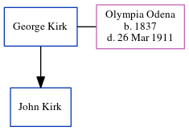

George Kirk
[ Home ] | [ Calendar ] | [ Surnames Index ] | [ Census Index ] | [ Family History ]George Kirk, the husband of Olympia Eugenie Odena (the three times great-aunt of Michele Copp (née Phillips)) andhad 1 child, John.
Citations
- 1900 United States Federal Census Online publication - Provo, UT, USA: MyFamily.com, Inc., 2004.Original data - United States of America, Bureau of the Census. Twelfth Census of the United States, 1900. Washington, D.C.: National Archives and Records Administration, 1900. T623, 1854 rolls.
Family Tree
Generated by ged2site. Last updated on Jun 6, 2024